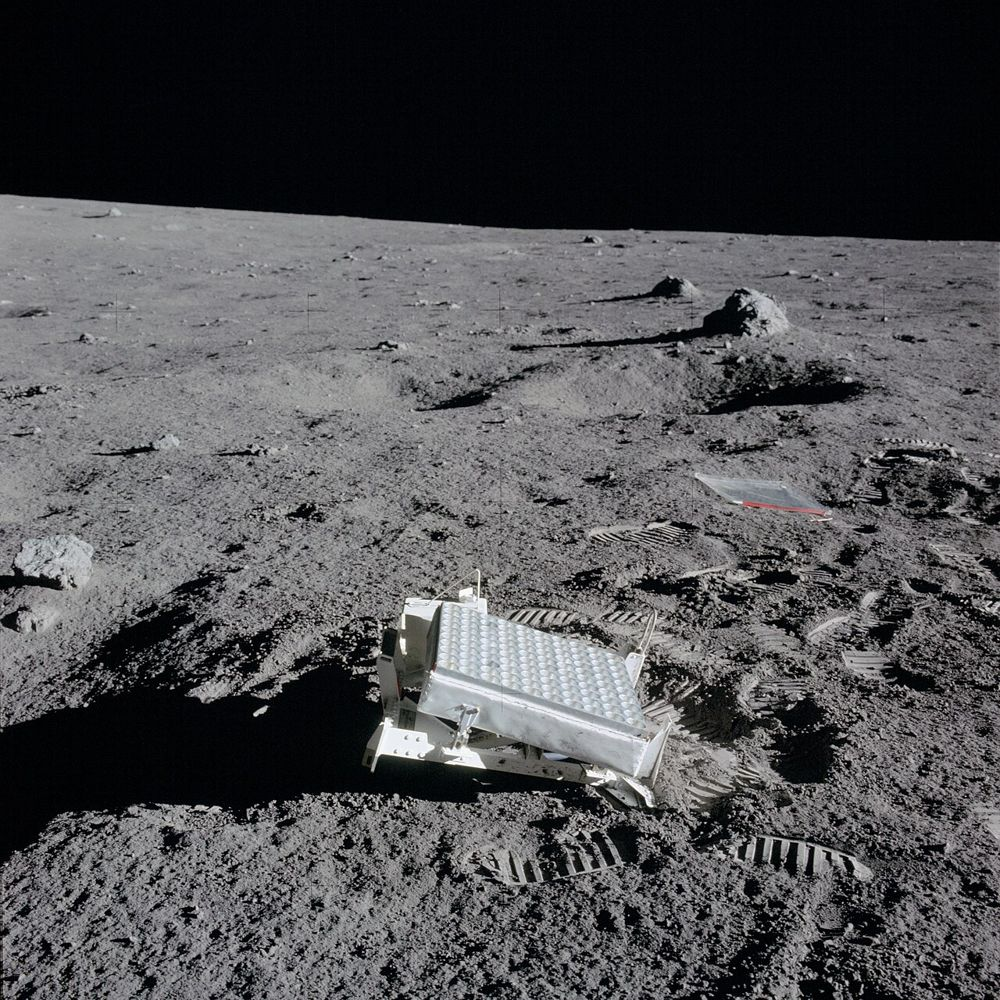
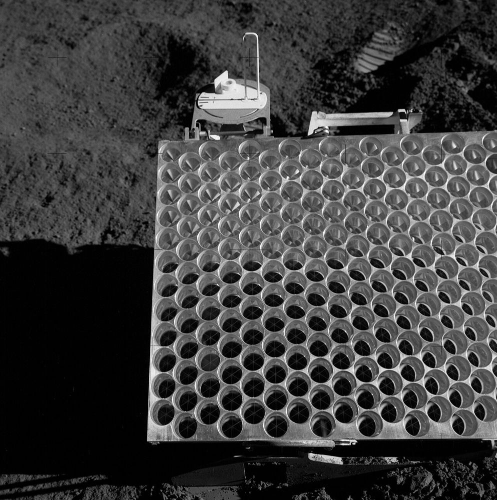

1Ay'a bırakılan aynalar
Temmuz 1969'da Apollo 11 astronotları Neil Armstrong ve Buzz Aldrin, Ay yüzeyine bayrak ve ayak izlerinin yanı sıra bilimsel aletler de bıraktı. Bunlardan biri, bir bavul büyüklüğünde, 100 küçük cam prizmadan oluşan bir lazer yansıtıcısıydı.
Sonraki Apollo 14 ve 15 görevleri de benzer yansıtıcılar yerleştirdi. Apollo 15'inki 300 prizmalı, daha büyük bir yansıtıcıydı. Sovyetlerin Ay'a gönderdiği Lunokhod araçlarında da yansıtıcılar vardı. Bu yansıtıcılar elektrik gerektirmez ve yarım asrı aşkın süredir hâlâ çalışıyor.

2Lazerle mesafe ölçümü
Bu prizmaların özelliği, gelen ışığı tam geldiği yöne geri yansıtmalarıdır. Bisikletlerdeki reflektörler de aynı ilkeyle çalışır.
Dünya'daki gözlemevleri güçlü teleskoplarla bu yansıtıcılara lazer ışını gönderir. Işık Ay'a gidip geri dönmek için yaklaşık 2,5 saniye harcar. Işık hızı çok hassas biçimde bilindiği için bu dönüş süresi ölçülerek Ay'a olan uzaklık santimetreler, hatta milimetreler düzeyinde hesaplanabilir.
Bu iş çok zordur. Lazer ışını Ay'a ulaştığında birkaç kilometre genişliğe yayılır. Gönderilen trilyonlarca ışık parçacığından (foton) yalnızca birkaçı geri dönüp teleskopta algılanabilir.
3Ay neden uzaklaşıyor?
Onlarca yıllık ölçümler Ay'ın her yıl yaklaşık 3,8 cm uzaklaştığını gösterdi. Bu, tırnaklarımızın uzama hızına yakındır.
Bunun sebebi gelgitlerdir. Ay'ın çekim kuvveti Dünya'daki okyanusları kabartır. Dünya, Ay'ın kendi etrafında dolanmasından daha hızlı döndüğü için bu su kabarıklıklarını Ay'ın biraz önüne taşır. Bu kabarıklıkların kütlesi Ay'ı yörüngesinde hafifçe ileri çeker ve onu yavaş yavaş dışarıya doğru iter.
Bu sırada aynı etki Dünya'nın dönüşünü de frenler. Yani günlerimiz çok çok yavaş uzuyor. Bu artış bir yüzyılda yalnızca milisaniyelerle ölçülecek kadar küçüktür. Fosil mercanlar üzerindeki büyüme halkaları, yüz milyonlarca yıl önce bir günün daha kısa, bir yıldaki gün sayısının ise daha fazla olduğunu gösteriyor.

4Ay bir gün kaçacak mı?
Endişelenmeye gerek yok. Ay'ın uzaklaşması son derece yavaştır. Milyarlarca yıl sürecek bu süreç tamamlanmadan önce Güneş'in kendisi büyük değişimler geçirmiş olacak.
Ama uzak gelecekte Ay biraz daha uzakta olduğu için gökyüzünde daha küçük görünecek. Bir gün tam güneş tutulmaları artık gerçekleşmeyecek, çünkü Ay Güneş'i tam örtemeyecek kadar küçük görünecek.
💡 Biliyor muydun?
- Lazer ölçümleri, Einstein'ın genel görelilik kuramının bazı tahminlerini test etmek için de kullanıldı.
- Ay'ın Dünya'ya uzaklığı ortalama 384.400 km'dir. Bu mesafeye Dünya büyüklüğünde yaklaşık 30 gezegen sığar.
- Apollo 11'in yansıtıcısı, astronotların Ay yüzeyinde yaptığı birkaç deneyden bugün hâlâ veri üretmeye devam eden tek tanesidir.
✅ Kaynaklar
- Lunar and Planetary Institute — Apollo 11 deneyleri (Lazer Mesafe Yansıtıcısı)
- NASA Science — Moon Facts
- Wikipedia — Lunar Laser Ranging experiments (kaynakçalı)
📷 Görseller
- Kapak: NASA · Public domain · Wikimedia Commons
- Apollo 14'ün Ay'a bıraktığı lazer yansıtıcısı: NASA · Public domain · Wikimedia Commons
- Apollo 15'in Ay yüzeyine kurduğu daha büyük lazer yansıtıcısı: Dave Scott, NASA · Public domain · Wikimedia Commons